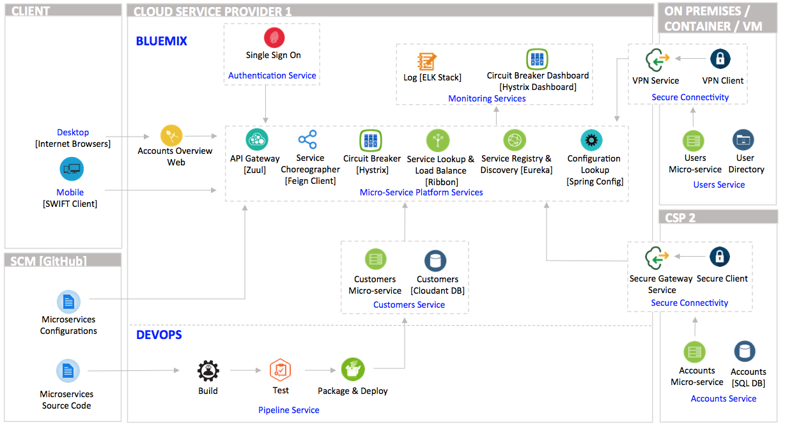

Accounts Overview Demo powered by Microservices on IBM Bluemix
@IBM Cloud EcoD, 2016: Demo built on Microservice Architecture powered by Spring Cloud and Boot on IBM Bluemix
Contributors: Daniel Cho, danielcho@us.ibm.com
Target Audience
Architects and developers whose interest is to learn:
Core microservice platform components to enable runtime collaboration,
How a cluster of microservices on cloud works together to support a demo business application.
What You Will Learn
Microservice powered by Spring Cloud running on Spring Boot
Place ponts here
Introduction
Rapid changes in business climates force supporting IT solutions to evolve as quickly within largely distributed teams and systems. Services employing
Microservice architecture have many benefits to thrive in such environment by providing loose coupling, autonomous services, decentralized governance,
fast fail and recovery.
It is important to realize that we enter the realm of distributed systems as soon as we start decomposing a monolithic business application. There are
challenges with distributed systems that must be properly handled to avoid system wide failure. It is fair to assume that the consistency and reliability
in a distributed system is difficult to guarantee, and the location of service components may constantly change or potentially disappear.
Here are what you may consider :
How to consistently and reliably distribute configuration to distributed processes
How to determine the locations of processes that may collaborate during runtime without hard coding physical locations
How to decouple from the backend processes and control granularity of access using a set of APIs that matters to a business application
How to prevent cascading into a system wide failure from participating service fault conditions
How to load balance the use of distributed services
The Accounts Overview demo is designed to address the challenges proposed to consider when building a business application on Microservice architecture.
Place Project overview, Demo functional requirement, Architecture decisions, Static architecture overview, and Dynamic component interaction diagrams here !
Scope
scope here
Functional Use Cases
usecases here
Architectural Decisions
decisions here
Architecture Overview
Accounts Overview Demo Architecture

Component Interaction
component interaction here
Place Accounts Overview Microservices Demo here
How To Run
Place installation and run steps here.
Configuration Service
Purpose
Provides a centralized configuration service that is horizontally scalable.
Uses a pluggable repository layer that supports local storage, Git as this demo, and Subversion.
Easy to version and audit configuration changes using a version control system as its repository.
Flow
Component
Access Configuration Service Repository and Monitoring Resources
to show configurations managed via GitHub, an external version control respository.
Notice each configuration takes its corresponding service name defined in respective service's bootstrap.yml for its file name.
application.yml applies to all microservices whose configurations fetched from the configuration service server.
to show configuration service information using '/info' request.
to show configuration service status [health] using '/health' request.
to show configuration service metrics [resources] using '/metrics' request.
to show configuration service trace using '/trace' request.
Service Registry and Discovery Service
Purpose
Add here.
Add here.
Add here.
Flow
Component
Access Discovery Service Monitoring Resources
to show Service Registry and Discovery Service monitoring site.
Notice the list of each registered service using its corresponding service name defined in respective service's bootstrap.yml for its
logical name. Logical service names are used by other microservices or api gateway in the demo to enable inner-process calls. Consequently, hard coding
of service endpoints can be avoided entirely. This is particularly beneficial for cloud services when there is no guarantee that service endpoints
remain the same overtime.
Notice the service STATUS column with individual service's current status. Click the link to see physical endpoints registered via the
Discovery service. Each service has different endpoint [host name, port number, and root context] as it is developed and maintained
by different team at different server in real life.
to show discovery service information using '/info' request.
to show discovery service status [health] using '/health' request.
to show discovery service metrics [resources] using '/metrics' request.
to show discovery service trace using '/trace' request.
API Gateway Service
Place api gateway microservice flow and demo here.
API Service Choreographer
Place api service choreographer microservice flow and demo here.
Accounts Service
Place accounts microservice flow and demo here.
Customers Service
Place customers microservice flow and demo here.
Accounts Overview Web: A Cluster of Microservices Working Together
Place accounts overview microservice flow and demo here.
How To Deploy To Bluemix
Place how to deploy to Bluemix here.
Place monitoring demo here - Circuit Braker and Log Trail